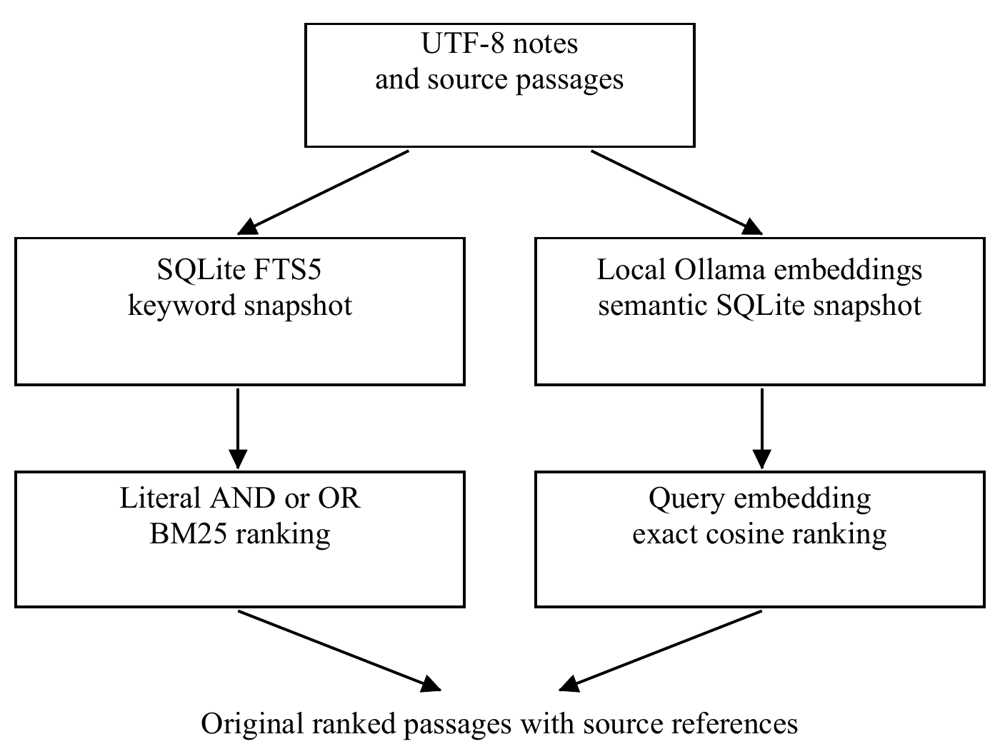
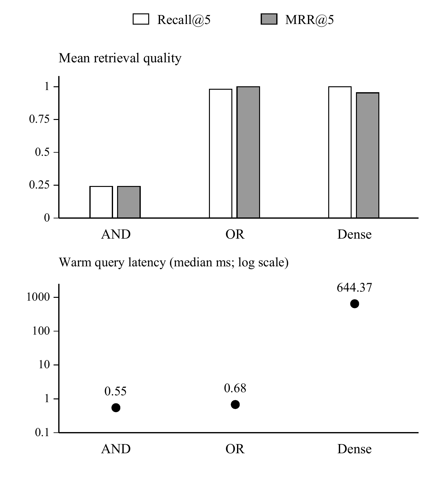

This month’s work turned a local document project into a comparison between two retrieval approaches. The most useful outcome was a tradeoff, rather than a simple claim that semantic search was better.
Goal and strategy
The problem is cross-document retrieval when a question and a design note use different vocabulary. WAWA Mini’s strategy is to preserve a keyword baseline, add a local semantic path, and compare their ranked source passages under the same small test fixture.
The keyword path has two explicit conditions: AND requires every query term, while OR allows any query term. Both use SQLite FTS5’s BM25 ranking. Keeping OR in the comparison matters: a restrictive AND baseline alone would make semantic retrieval look stronger than this pilot supports.
What was built
The Python command-line application now has persisted keyword and semantic snapshots. SQLite FTS5 handles text matching. Ollama supplies local Nomic embeddings with 768 dimensions; exact cosine similarity ranks the semantic candidates. Original passages and their source references remain the output.

The workflow includes explicit manual indexing and rebuilding. Model identity and snapshot checks help reject incompatible stored data. The recorded October 18 verification passed 115 automated tests; that is evidence from the milestone build, not a claim about a new test run today.
What the pilot measured
The exploratory fixture contains 50 synthetic notes and 30 queries: 25 answerable and five unsupported. Its relevance labels were created and reviewed with AI assistance and have no independent human validation. Quality averages below use the 25 answerable queries; warm end-to-end latency uses all 30 queries.
| Condition | Recall@5 | MRR@5 | Median ms |
|---|---|---|---|
| Keyword AND | 0.24 | 0.24 | 0.55 |
| Keyword OR | 0.98 | 1.00 | 0.68 |
| Dense semantic | 1.00 | 0.9533 | 644.37 |
- Recall@5
- The fraction of a query’s labeled relevant sources found among its first five results, averaged across answerable queries.
- MRR@5
- Mean reciprocal rank: the average of one divided by the position of the first relevant result, with zero if none appears in the first five. A higher value means earlier first relevant results.

Dense search added one additional relevant source for one question. OR already returned a relevant source first for every answerable query. Dense search put the first relevant source later for two queries, reducing its MRR. In this fixture, OR therefore had better first-result ranking and much lower latency.
Challenges the evidence exposed
The five unsupported queries are an important limitation. Both OR and dense search still returned candidates for all five. The application ranks passages; it does not reliably decide that a question has no answer. Adding generated responses without addressing this would introduce a separate grounding problem.
Timing also needs careful interpretation. The semantic measurement includes local HTTP communication, query embedding, identity checks, and search. It is not an isolated measure of vector comparison speed. Warm-up, a fixed evaluation order, and this small corpus further limit what can be inferred.
Retrospective and next steps
The engineering result is a working, inspectable retrieval comparison. Persistent storage, explicit matching policies, and source-linked passages provide a stronger foundation than an unmeasured search demonstration. The result also makes the next priorities clearer: keep the OR baseline, profile the actual runtime, and expand to held-out real notes with independent human relevance judgments.
Exact vector scanning is simple enough to inspect at this scale, but this experiment does not establish large-corpus scalability. Manual rebuilds and a command-line interface also remain practical limits. A graphical interface, automatic watching, generated answers, and reliable abstention are future work.
The tools used for this increment are Python, SQLite FTS5, Ollama, Nomic embeddings, Git/GitHub, and automated tests. This public journal shares the design and aggregate observations; application code and underlying project materials remain in a private repository for authorized review.